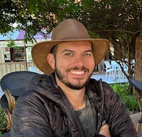

Elliott Davis
Profile
Eager programming professional with demonstrated expertise in web applications development, systems architecture and automation. Skilled in multiple languages, application architectural patterns and development methodologies.
Technologies
Developed production applications in Rust, Go, Ruby and JavaScript. Experience modernizing legacy application architectures by incorporating new paradigms to speed up delivery from development to production.
Experience
VMware
Palo Alto, CA
Launch Architect
Aug 2021 - Present
- Built proof of concept for kubernetes distribution under 50M.
- Launched a black box kuberentes install inside ESX.
- Collaborated with customer design partners to perfect kubernetes in a box.
- Golang
- Bash
- ESX
- Kubernetes
Salesforce
San Francisco, CA
Lead Engineer
Jan 2018 - Aug 2021
- Led team to deliver a new development environment based on Kubernetes to the Pardot business unit which allowed them to easily experiment with immutable infrastructure.
- Developed system for deploying and reverting HAProxy config changes which reduced deployment and incident remediation time from 15 minutes to 10 seconds.
- Mentored intern through his first project at Salesforce which is still used to help developers gain insights into build metrics today.
- Led team to deliver chatops and CI system migrations to Slack and Buildkite.
- Developed system for auto-remediation of CVEs in mutable infrastructure.
- Golang
- Ruby
- Bash
- Kubernetes
- Terraform
- AWS
Chef Software
Seattle, WA
Senior Software Engineer
Mar 2015 - Nov 2018
- Led application teams to develop and support new features in Elixir and Erlang.
- Developed highly distributed SaaS written in Rust.
- Engaged with Chef's open source community to develop new features and fixes.
- Identified process improvements for delivering business value faster.
- Developed robust architecture for fault tolerant stateful applications.
- Led external contract teams to deliver Kubernetes integrations for product.
- Spoke at KubeCon EU 2017 about build pipeline landscapes in Kubernetes.
- Earned promotion for cross cutting team collaboration and presenting architectural solutions.
- Erlang
- Rust
- React
- AngularJS
- Kubernetes
cPanel
Houston, TX
Systems Software Developer II
Mar 2013 - Mar 2015
- Designed, developed and deployed OpenStack/Ceph virtualization infrastructure utilizing MAAS and Chef.
- Served as core reviewer for the OpenStack Chef project.
- Refactored log processing system using ElasticSearch, LogStash and Python.
- Developed Python, AngularJS and Perl applications for internal OpenStack virtualization infrastructure.
- Perl
- ELK
- AngularJS
- OpenStack
Bywater Solutions
Santa Barbra, CA
Development Specialist
Jul 2012 - Mar 2013
- Developed new features and fixes for Koha (open source integrated library system).
- Participated in sales calls and a technical lead.
- Served as Quality Assurance Assistant for the Koha Community.
- Perl
- Koha
Education
BS in Computer Science
University of Texas at Tyler
Aug 2007 - May 2012

- +1 512 666 9664
- elliott@tirefire.dev
- tirefire.dev
- United States
Certifications
- Scrum Master / Scrum Alliance (2014)
- Product Owner / Scrum Alliance (2018)
Interests
- Strength Training
- Cooking
- Parenting
- Traveling